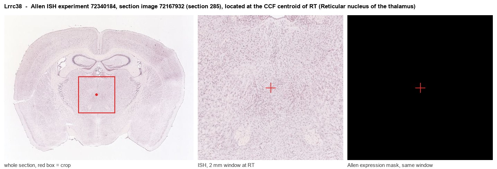

Lrrc38
Leucine-rich repeat-containing protein 38 (BK channel auxiliary gamma subunit LRRC38)
Spatial tier: RESTRICTED · Class: ION_CHANNEL · Top region: RT (Reticular nucleus of the thalamus) · Positive regions: 20/554
46.5Discovery Score
40.8Targetability Score
CEvidence grade C
What this means: Lrrc38: fine CCF profile is restricted toward RT (top regions: RT, FOTU, PRM, PYR, LING; 20 positive regions); direct spatial validation is still required.
Function in RT: evidence, prediction, innovation
- Gene function
- Lrrc38 encodes a single-pass membrane protein with an extracellular leucine-rich-repeat domain that acts as a gamma auxiliary subunit of the large-conductance calcium- and voltage-activated potassium (BK, KCa1.1) channel. Like its paralogue LRRC26 it assembles with the pore-forming BK alpha subunit and shifts the voltage dependence of activation in the hyperpolarising direction, so BK channels open more readily at physiological voltages.
- Region function
- The reticular nucleus of the thalamus is a sheet of GABAergic neurons wrapping the thalamus; it provides the main inhibition onto relay nuclei, generates sleep spindles and gates sensory relay and attention, and its burst firing depends on T-type calcium and calcium-activated potassium channels.
- Published in this region
- inferred No region-specific literature found. Yan and Aldrich 2012 defined LRRC38 as a BK gamma subunit producing a roughly 20 mV hyperpolarising shift and reported its strongest expression in secretory glands, with LRRC55 rather than LRRC38 being the brain-enriched family member; Gonzalez-Perez 2022 reviews the family. No study has examined LRRC38 or any BK gamma subunit in the thalamic reticular nucleus.
- Predicted function
- Prediction: if LRRC38 partners BK alpha in reticular neurons it would lower the voltage threshold for BK activation, sharpening spike repolarisation and the fast afterhyperpolarisation and thereby setting the intraburst frequency of the rebound bursts that generate sleep spindles. Knockout is predicted to broaden reticular action potentials, lengthen bursts, and change spindle density and duration with knock-on effects on sleep-dependent memory and absence-seizure susceptibility; it should also reduce the sensitivity of reticular firing to the BK blockers paxilline and iberiotoxin.
- Innovation
- ★★★★★ 5/5 BK auxiliary subunits have never been studied in the reticular nucleus even though BK channels shape exactly the burst firing that defines this nucleus.
- Tools
- Kcnma1 (BK alpha) knockout mice and BK pharmacology (paxilline, iberiotoxin, the opener NS11021); reticular neurons accessible with Pvalb-IRES-Cre (JAX 017320), Sst-IRES-Cre (JAX 013044) and Gbx2-CreER; no Lrrc38-specific Cre line or widely validated antibody.
- References
Direct evidence located at the region

Allen ISH experiment 72340184, section image 72167932 (section 285): the section that contains the CCF centroid of Reticular nucleus of the thalamus according to the Allen image-to-atlas alignment (reference_to_image), with a 2 mm window around that point. Left: whole section, red box = window. Middle: ISH signal. Right: Allen's expression-mask view of the same window. open this image in the Allen viewer
Look it up yourself: Allen Mouse Brain ISH for Lrrc38Allen reference atlas: RT (structure 262)ABC Atlas MERFISH viewer(in the ABC Atlas choose dataset MERFISH-C57BL6J-638850-CCF, colour cells by gene "Lrrc38" or by parcellation_substructure "RT")All genes confined to RT + 3-D brain
Direct spatial evidence
MERFISH REGION LOCATOR

Regional expression figure

Predicted WMB × fine-CCF profile; not direct full-transcriptome spatial measurement.
Spatial profile
Evidence and specificity
- Evidence status
- PREDICTED_FINE
- Direct sources
- None; predicted localization only
- Exclusive threshold
- 12 positive regions out of 554
- Spatial specificity
- 0.349
- Top-region fraction
- 0.068
- Filter status
- PASS
Interpretation limits
- Cell-type-to-region projection is imputed expression, not direct spatial measurement.
- Adult reference atlases do not establish stability across age, sex, strain, state, or disease.
- Transcript abundance does not guarantee protein abundance or genetic-tool performance.